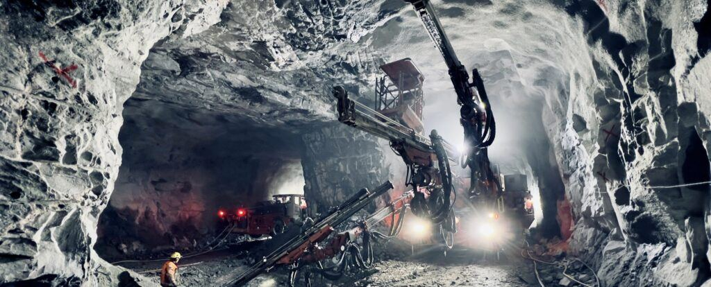
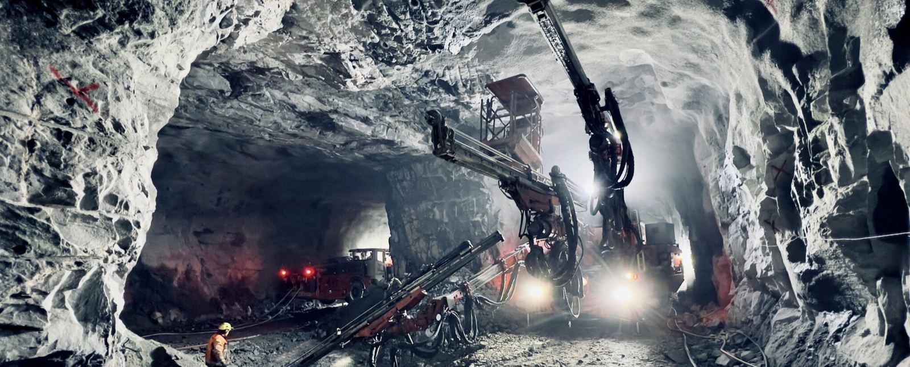
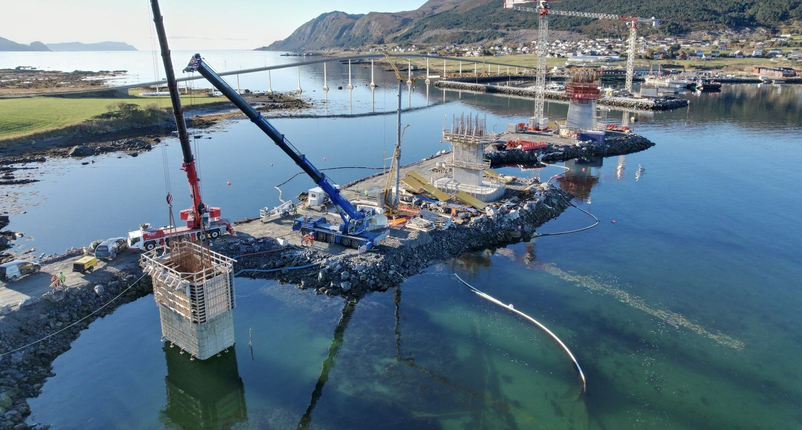

Bygg/anlegg
METROSTAV NORGE AS
Tunneler Bruer Vann- og frostsikring 15 prosjekter 320 ansatte 1.15 mrd. NOK 2024 3016463 utdrevet mengde i m³ Metrostav Norge AS Metrostav Norge AS er en moderne og teknologisk ledende entreprenør innen bygg- og anleggsbransjen, med spesialisering på komplekse infrastrukturprosjekter.

Dette gjør vi
- 01
Metrostav Norge AS
Metrostav Norge AS er en moderne og teknologisk ledende entreprenør innen bygg- og anleggsbransjen, med spesialisering på komplekse infrastrukturprosjekter. Våre kjerneområder er tunneldriving og utvikling av andre underjordiske konstruksjoner, samt bygging av stål- og betongkonstruksjoner – med særlig kompetanse innen brubygging.
- 02
Hvor vi opererer
Prosjektene våre gjennomføres i Norge, Sverige, Island og på Færøyene.
- 03
Et utvalg av våre referanser
Ny tunnelbane Akalla-Barkarby, Sverige Prosjektet Järfällatunneln omfatter en forlengelse av den blå T-banelinjen i nordvestlige Stockholm. Metrostav Norge AS deltok i driving av banetunneler, forbindelser og tekniske rom mellom...
Fra arbeidet vårt


Slik jobber vi
- 01
Ta kontakt
Ring eller send skjemaet, og fortell kort hva du trenger.
- 02
Vi avtaler befaring
Vi ser på forholdene og snakker gjennom hva som skal gjøres.
- 03
Du får skriftlig tilbud
Du vet hva jobben koster før den starter.
Om METROSTAV NORGE
Tunneler Bruer Vann- og frostsikring 15 prosjekter 320 ansatte 1.15 mrd. NOK 2024 3016463 utdrevet mengde i m³ Metrostav Norge AS Metrostav Norge AS er en moderne og teknologisk ledende entreprenør innen bygg- og anleggsbransjen, med spesialisering på komplekse infrastrukturprosjekter.
Gjennom bruk av avansert teknologi, høy fagkompetanse og flere tiårs erfaring har vi etablert oss som en pålitelig og attraktiv samarbeidspartner i det skandinaviske markedet.
Metrostav Norge AS er en del av Metrostav-gruppen – Tsjekkias største entreprenørkonsern med over 50 års historie. Konsernet består av nærmere 80 selskaper og er representert i 16 land verden over.
Mer om det vi gjør
Metrostav Norge AS er norsk bygg- og anleggsentreprenør som fokuserer på infrastrukturprosjekter. Vårt hovedområde er tunneldriving og utbygging av andre underjordiske konstruksjoner, samt utbygging av stål- og betongkonstruksjoner – spesielt bruer.
Vi er et av medlemmene i Metrostav-gruppen , som er det største tsjekkiske entreprenørkonsernet med historien på 50 år. Metrostav-gruppen består av nesten 80 enheter som er aktive i 16 land over hele verden.
METROSTAV NORGE AS · 48426134
Be om tilbudTa kontakt
- Telefon48426134
- E-postpost@metrostav-norge.no